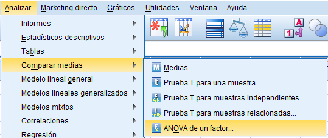
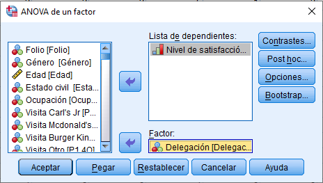
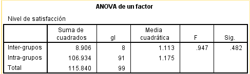
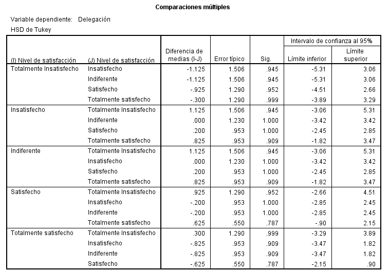

En muchas situaciones, el investigador necesita comparar más de dos grupos. En estos casos, las pruebas T no son suficientes, por lo que se utiliza el Análisis de Varianza (ANOVA). El ANOVA permite determinar si existen diferencias significativas entre las medias de tres o más grupos.
H₀: Todas las medias de los grupos son iguales H₁: Al menos una media es diferente
El ANOVA compara la variabilidad: Entre grupos (diferencias entre medias) Dentro de los grupos (variabilidad interna) Si la variabilidad entre grupos es suficientemente grande, se concluye que existen diferencias significativas.
Ir a: Analizar → Comparar Medidas → ANOVA de un factor
Seleccionar: Variable dependiente (ej. nivel de satisfacción) Factor (ej. localidad o grupo)
Ejecutar el análisis
Se debe observar el valor Sig.: Si p < 0.05 → existen diferencias entre los grupos Si p ≥ 0.05 → no existen diferencias significativas


Cuando el ANOVA indica que existen diferencias significativas, es necesario identificar entre qué grupos se presentan dichas diferencias. Para ello se utilizan pruebas adicionales llamadas post hoc, como: Tukey y Bonferroni
En la ventana de ANOVA, seleccionar Post Hoc
Elegir una prueba (ej. Tukey)

Ejecutar el análisis
Una empresa desea evaluar si el nivel de satisfacción de sus clientes difiere entre varias localidades. El ANOVA permite determinar si estas diferencias existen y si son estadísticamente significativas.

En este caso en específico, la satisfacción no tiene diferencia significativa entre delegaciones debido a que nuestras p dan valores mayores a 0.05.
El ANOVA es una extensión de la prueba T para más de dos grupos. No indica directamente dónde están las diferencias, sólo si existen. Para un análisis completo, deben utilizarse pruebas Post Hoc cuando corresponda.